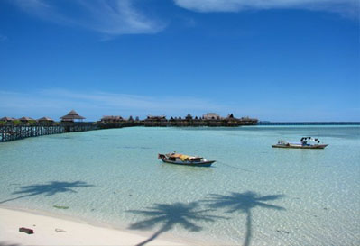
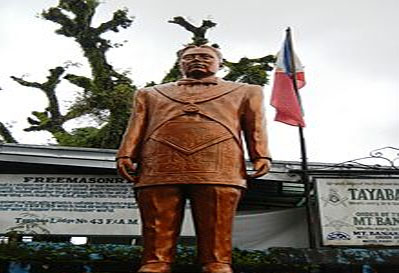
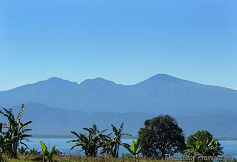

MarawiThe most breath-taking scene in the region noted for its lust countryside is the area fringing Lake Lanao.

Mabul Beach
Malabang– is a mile long glistering sandy beach being splashed upon by dashing dark blue seawater.
The beach is perfect for fishing and sailing.

Tomb of Jose Abad Santos
MalabangTomb of a great Filipino whose love of the country offered himself sacrifices to the political power of the Japanese Imperial Army
of WW II. His courage and determination in facing the muzzles of deadly guns of the Japanese firing squad proved once more the Filipinos love for freedom from foreign domination.

The Sleeping Lady
ParangGazing toward the Southwest from the wertern side of Lake Lanao, one can behold a delicately formed sleeping lady out of the natural curvature of Lanao Sur’s mountain ranges.
Iga-Bai Waterfalls
BalabaganOwned andLocated about a mile west of the growth center of barangay Iga-Bai. It brags of tiny streams of mineral water which gushes out from the several breaks of hill-sized boulder
shrouded by outgrowth of brushes and towering trees.